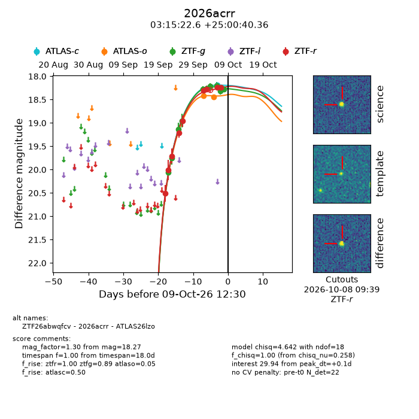
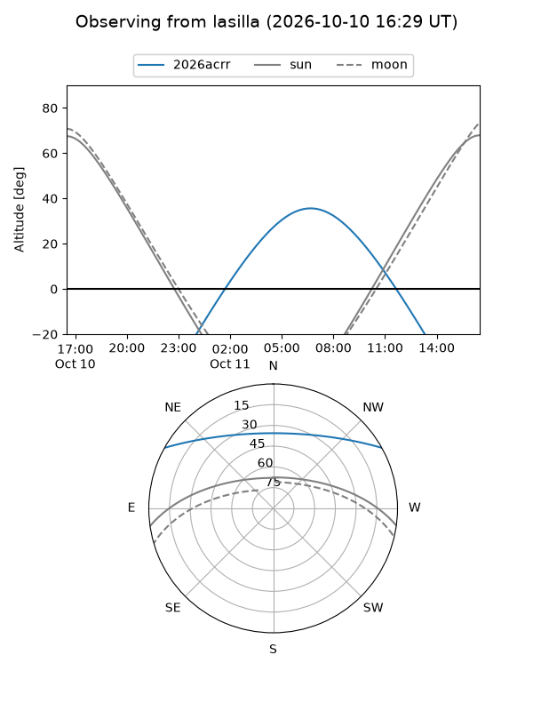
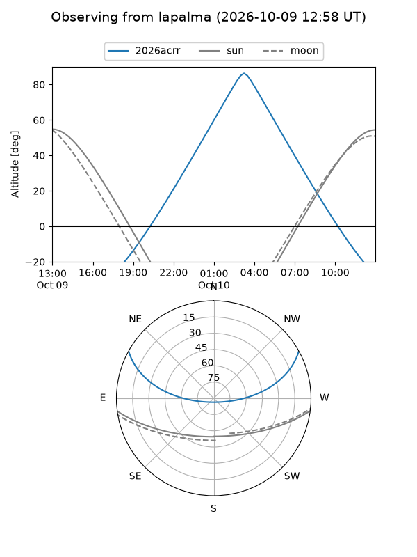
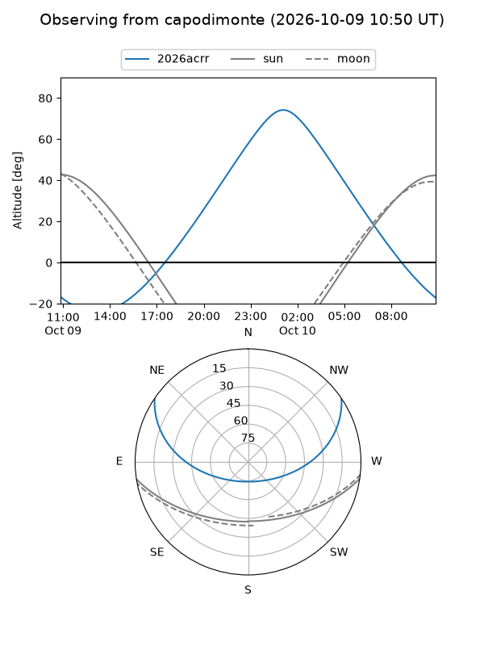
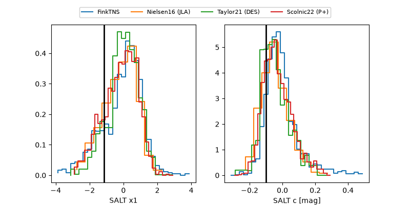

2026acrr
Target 2026acrr at 2026-10-09 12:32
Aliases and brokers:
FINK-ZTF: ztf.fink-portal.org/ZTF26abwqfcv
Lasair-ZTF: lasair-ztf.lsst.ac.uk/objects/ZTF26abwqfcv
ALeRCE-ZTF: alerce.online/object/ZTF26abwqfcv
YSE-PZ: ziggy.ucolick.org/yse/transient_detail/2026acrr
TNS name: wis-tns.org/object/2026acrr
Direct TNS query: direct search
alt names
ZTF26abwqfcv (ztf,fink_ztf)
2026acrr (tns,yse)
ATLAS26lzo (atlas)
Coordinates:
equatorial (ra, dec) = 48.8441,+25.01121
equatorial (HMS+DMS) = 03:15:22.59,+25:00:40.36
galactic (l, b) = (159.7749,-27.37648)
Flags:
peak dt: +0.1
Photometry:
last atlasc=18.18, atlaso=18.44, ztfg=18.27, ztfr=18.24
1 atlasc, 2 atlaso, 10 ztfg, 9 ztfr detections
Lightcurve

Visibility



Additional plots
